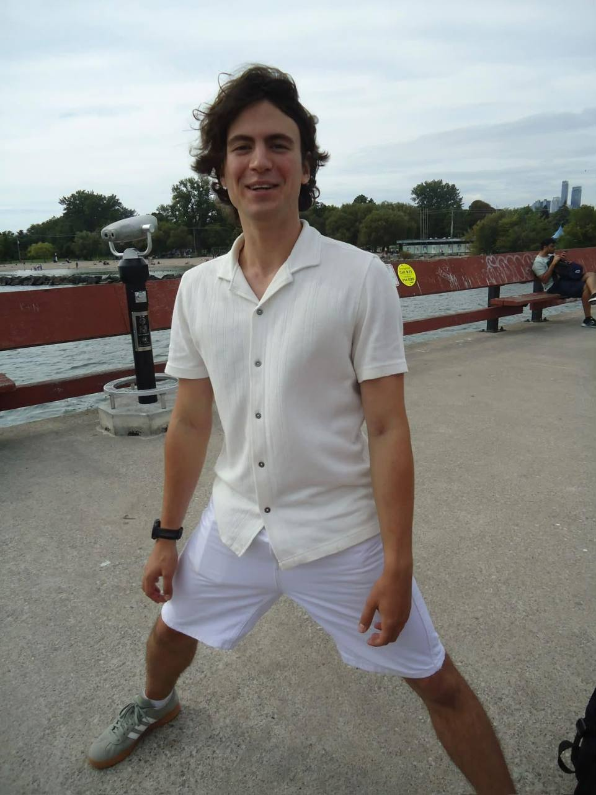
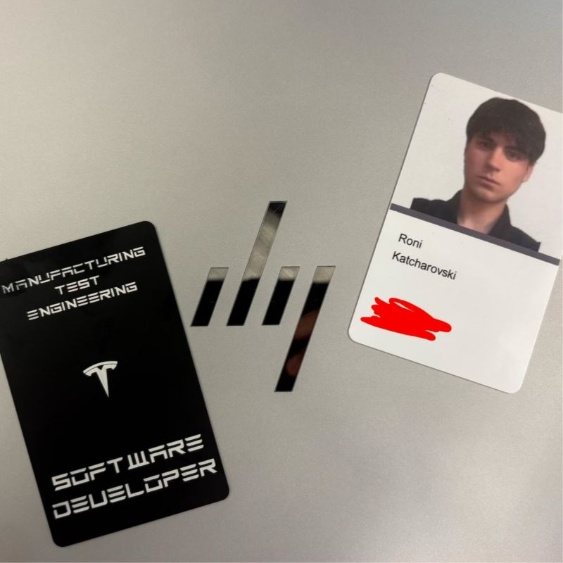
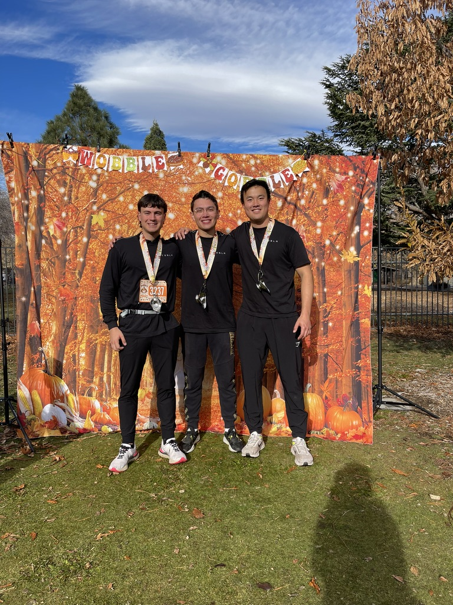
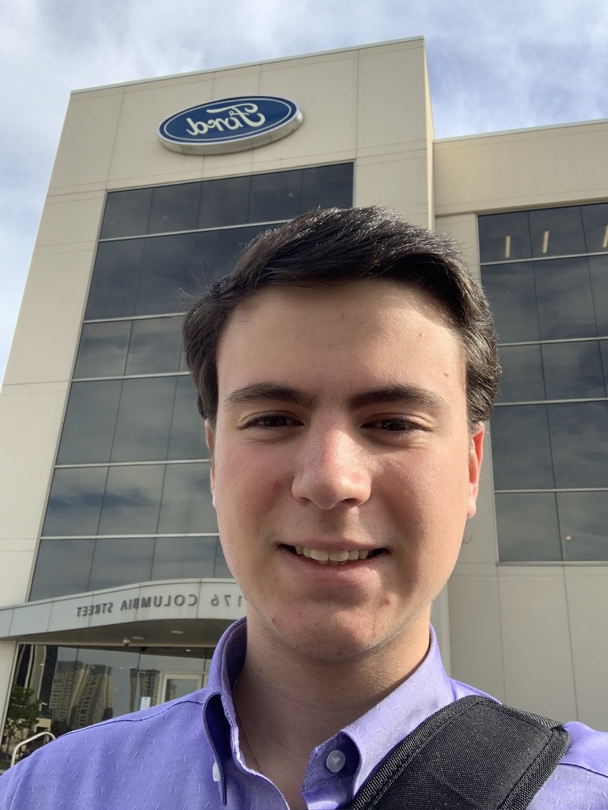

Hi, I’m
Roni.
I build things where software meets the real world.
pull the pin +a few things I care about,
arranged loosely
I build things where software meets the real world.
pull the pin +
100% sidequest completionistStudying to Work, Working to study
2023 — now
Tesla / California
Software, manufacturing, and learning at factory scale.
follow the red thread →
Tesla / Reno

Me and WHOOP CEO

Ford / building at scale
Little projects are where I follow the rabbit holes.
open the drawer → always one more thing to try
always one more thing to try